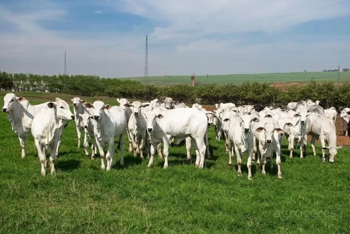
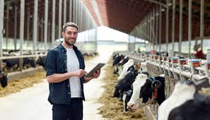

O que é Pecuária?
A pecuária é a atividade econômica que envolve a criação e o manejo de animais, principalmente para a produção de alimentos como carne, leite, ovos e outros produtos de origem animal.
Tipos de Pecuária
- Pecuária de Corte: Criação de animais para abate e produção de carne.
- Pecuária Leiteira: Produção de leite e derivados.
- Avicultura: Criação de aves para produção de ovos e carne de frango.
- Piscicultura: Criação de peixes em ambiente controlado.
Importância da Pecuária
A pecuária desempenha um papel fundamental na:
- Segurança alimentar global, fornecendo proteína animal essencial para a dieta humana.
- Economia global, gerando empregos e contribuindo para o PIB de muitos países.
- Preservação de tradições culturais e práticas agrícolas ancestrais.
Desafios da Pecuária
Apesar de sua importância, a pecuária enfrenta desafios como:
- Impactos ambientais, como emissão de gases de efeito estufa e uso de recursos naturais.
- Questões de saúde animal e bem-estar.
- Adaptação às mudanças climáticas e pressões econômicas.
pecuária

Exemplo de pecuária.
